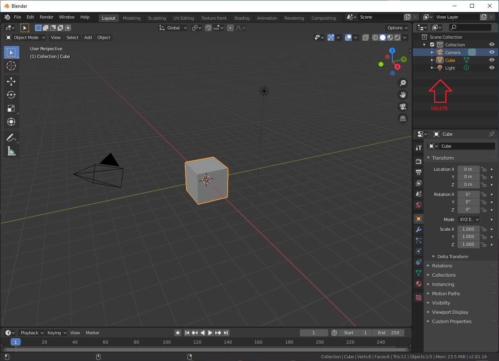
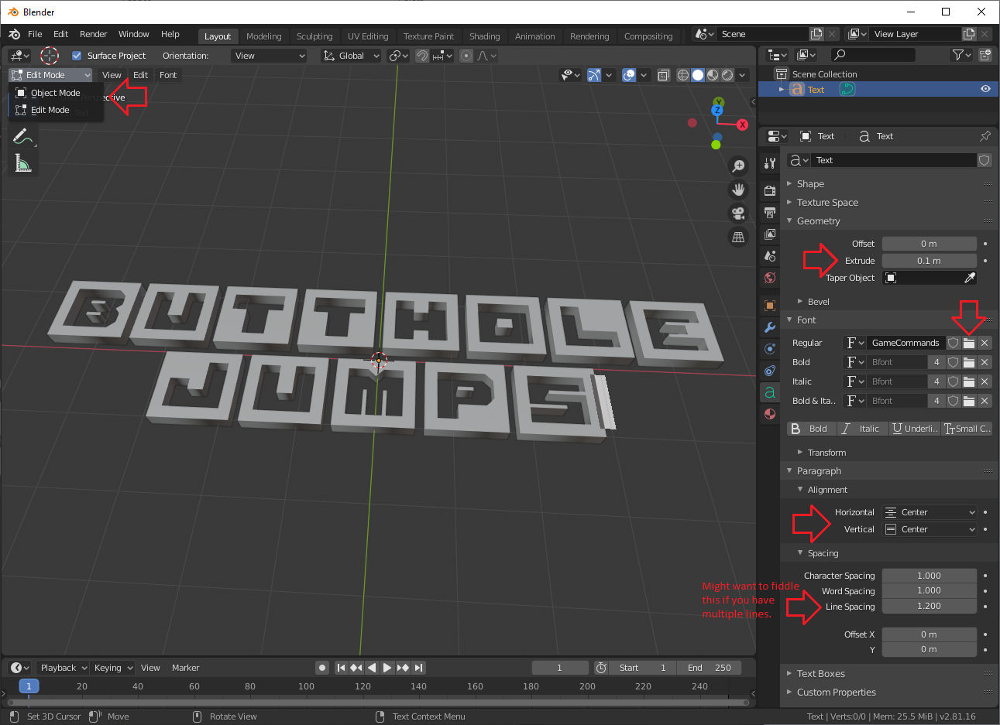
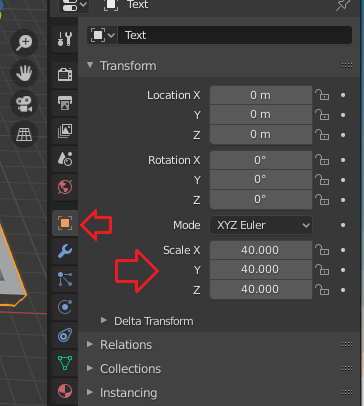
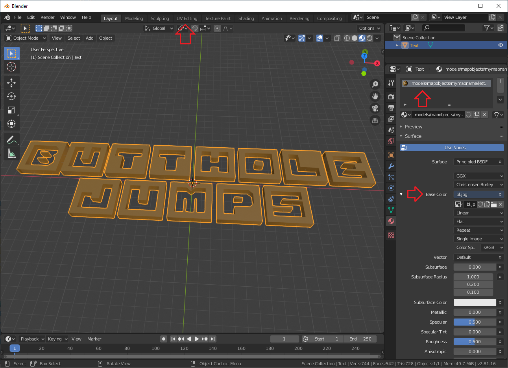
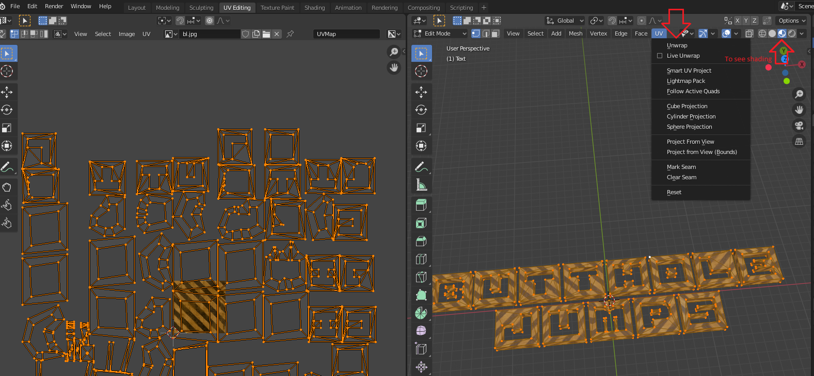
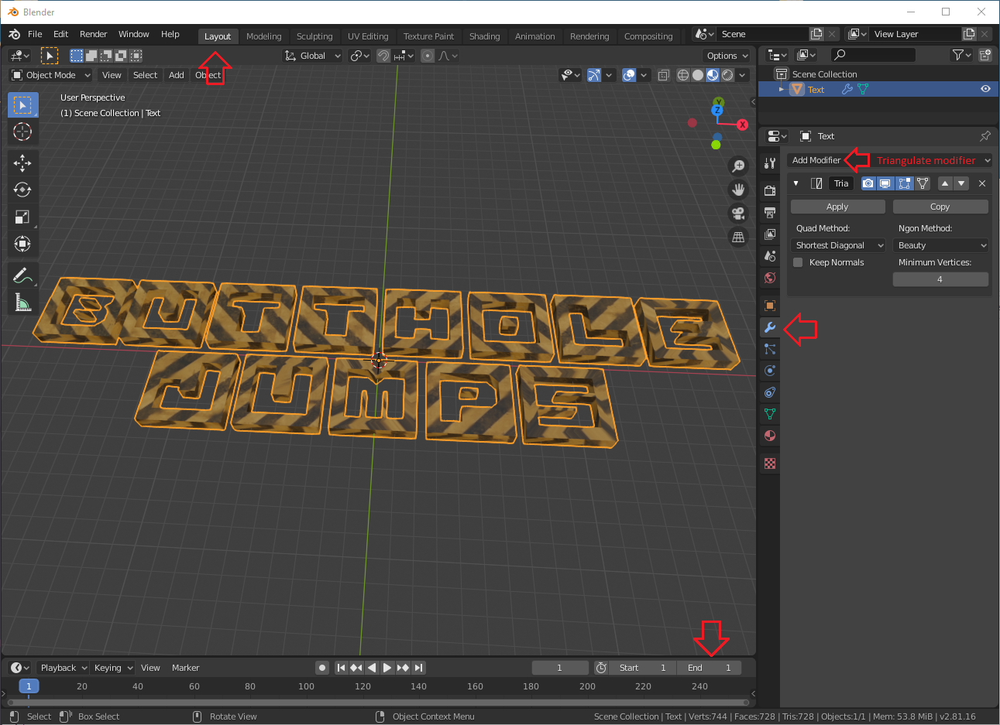
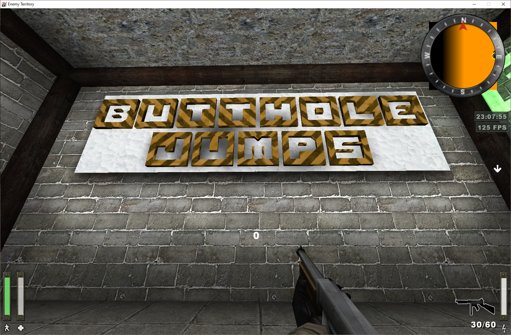
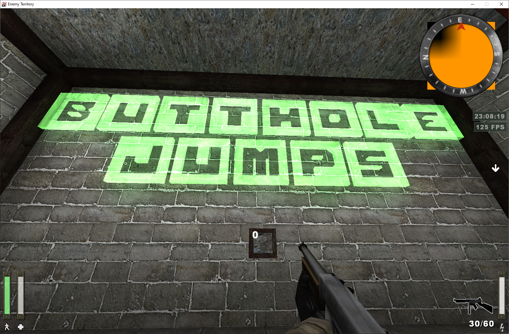

Making letters in Blender
This tutorial will teach you how to make simple letters for your map in Blender and export them as MD3 models, along with textures/shaders.
Getting started
- Download and install Blender.
- Open Blender, create a new General project.
- Before starting, install the MD3 export plugin.
- Unzip the file to a location of your choice.
- In Blender, go to
Edit->Preferences->Add-ons - Select
Install...at the top, browse to the extracted file and selectInstall Add-on - Click on the checkbox next to the plugin to enable it. The plugin should now be visible under
File->Export->MD3 (+shaders)
Creating the letters
- Delete everything in
Scene Collection

- Press
Addbutton on top left orShift + Aand selectText - Go to object data properties menu: green
asymbol on right side menu. - Under
Paragraph->Alignment, set bothHorizontalandVerticalalignment toCenter. - Under
Font, press the folder icon next toRegulartext field and select your desired font. - Unless you want your text to be 2D (why?), go to
GeometryandExtrudethe text to your liking. - Hit
TABto edit your text. - Select
Object Modefrom the top left.

- Right click on 3D window and select
Convert to Mesh. - Under
Object Properties,Scalesection, pump it up like 40x.

Texturing
- Navigate to
Material Propertiesmenu, red ball thing on right side menu. - Hit
Newand press the small circle next toBase Colorand selectImage texture. Click the folder icon and find your desired texture. - Change the material name to match your texture / shader path. If using a shader, do not specify a file extension. 
- Select
UV Editingtab at the top. - On right side window press
Ato select everything, press theUVbutton at the top and selectUnwrap - If you want to scale the texture, press
A->X->Son the left side window and move your mouse to scale.

- Go back to the
Layouttab at the top - Select
Modifier Propertieson the right,Add Modifier->Triangulate - At the bottom of the 3D view, there are animation controls; set
Endto 1

- Make sure your object is selected, and go to
File->Export->MD3 (+shaders)
Results


Tutorial by Fate